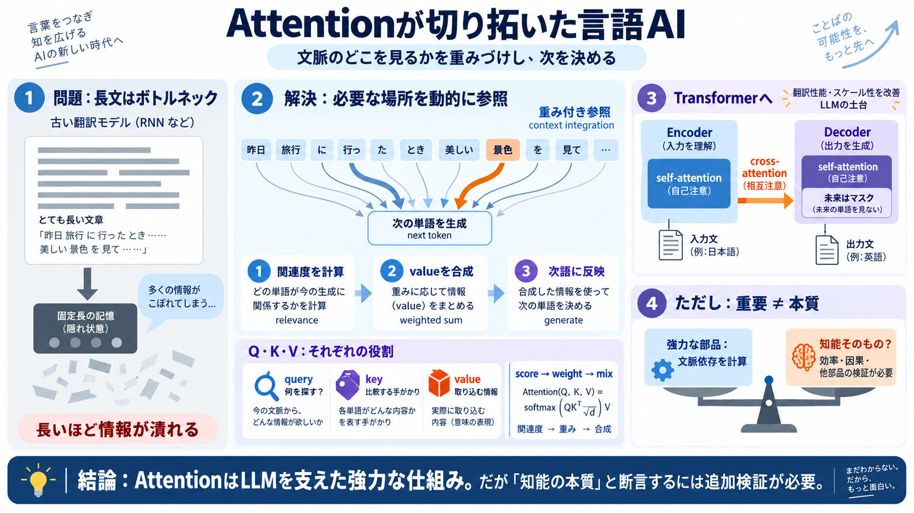

Attention Mechanisms in Neural Networks A Comprehensive Mathematical Treatment From Theory to Implementation
The Bahdanau attention mechanism computes alignment scores between the decoder’s current state 𝐬t\mathbf{s}\_{t} and eac…

attention（注意）は「文脈のどこを見て次を決めるか」を重みづけで計算し、LLMの土台になりました。では本当に“知能そのもの”なのでしょうか。
attentionが翻訳を伸ばした理由 / query-key-valueの役割
有効な部品と“本質”の同一視は別
初期のニューラル翻訳では、入力の情報を固定長の“記憶”に押し込む必要があり、長くなるほど性能が落ちました。attentionは「必要な場所から動的に取り出す」ことでこの制約を突破します。
全文 → 固定長表現（圧縮）
次語を決めるたび参照先を計算
attentionは「次に出す単語の決定に、どの単語がどれだけ関係するか」を重みで表し、関係の強い情報ほど取り込まれます。つまり文脈を“橋渡し”する仕組みです。
各位置の参照度（重み）を計算
重みで value を合成
次語生成に反映
「it」が“動物”を指すのか“道”を指すのかは前後文脈に依存します。attentionは単語間の関連度を数式として扱い、文脈整合の高い候補に重みを寄せられます。
it → 動物 / 道（どちらにもなり得る）
関連度が高い名詞の情報が強く反映
Transformerでは各単語がベクトル化され、attentionヘッドが query・key・value を使って“合う度”を計算し、valueを重み付きで混ぜます。これが文脈の統合を計算として可能にします。
「いま何を探しているか」
key：比較用 / value：取り込む情報
Transformerはエンコーダで文脈を蓄積し、デコーダで翻訳（次語生成）を行います。各層に（自己attention＋必要ならcross-attention）が入り、参照の制御が強くなります。
自己attentionで文全体を表現化
次語へ向けて参照（未来はマスク）
エンコーダ出力を参照して翻訳
学習は誤りが出るたびに重みを修正して進み、モデルは明示的ルールではなく統計的パターンとして関係（連想）を獲得します。例として「動物が疲れる」「道が広い」などの対応が表現に現れます。
予測誤差 → パラメータ更新
明示ルールではなく文脈の相関
Transformerはattention中心の設計により計算効率とスケーラビリティを改善し、翻訳性能を大きく伸ばしました。これは後続の大規模言語モデル（LLM）へ直結する技術的背景です。
attentionを核に最適化
最先端翻訳性能を達成
言語モデルは「次の単語予測」を通して多様な能力を内包しうます。記事は、これは“AI-complete”に近い見方を紹介しつつ、その直観の強さに注意を促します。
次語予測＝言語の多く
算数・記号・知識も必要になり得る
厳密同値ではなく“近さ”の比喩
attentionが役に立つことと、「知能の本質がattentionである」ことは同じ主張ではありません。記事も、人間の思考が言語以外（感覚・記憶・推論）を含む可能性を示し、慎重さを求めます。
文脈依存を強力に計算できる
他の部品・効率・因果関係も必要
attentionだけで“脳より優れている／同等”と断言するには、エネルギー効率・データ効率・計算量などの比較と反証可能な仮説が要ります。記事の示唆は「同じ仕組み再現」だけでは足りない可能性です。
省エネ・省データの再現性
attention以外の部品との合成
attention除去・変更での性能差
attentionは長文のボトルネックを解消し、query-key-valueで文脈を計算統合し、TransformerとLLMの進化を支えました。だが「知能の本質」と断言するには、比較・因果・効率の追加検証が必要です。
文脈融合を“重み付き参照”で実装する
重要性（役に立つ）と同一性（本質）は分けて考える
The Bahdanau attention mechanism computes alignment scores between the decoder’s current state 𝐬t\mathbf{s}\_{t} and eac…
the decoder should selectively focus on particular parts of the input sequence at particular decoding steps. Bahdanau’s …
4. Encoder and decoder: The transformer architecture is essentially an attention-based encoder-decoder type architecture…
where: $\mathbf{Q}\_{\text{dec}} = \mathbf{Y}\_{\text{prev}} \mathbf{W}^Q$ (from decoder) $\mathbf{K}\_{\text{enc}} =…
### 8.1.1 Bahdanau-Attention In 2014, Bahdanau, Cho, and Bengio (2014) proposed attention to fix the information proble…